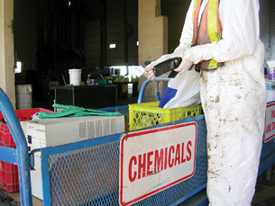

Module 4—Batteries and Balance
Big Picture
© 2008 Jupiterimages Corporation
It’s the end of a long day. Your end-of-day routine probably includes checking your cell phone, your MP3 player, and a few other devices to see if their batteries need to be recharged. You probably haven’t considered all the other devices in your home that rely on batteries in order to work.

The batteries in a laptop computer or in a cordless telephone provide you with great convenience, but at what cost? While some batteries are rechargeable, others are not. Every battery has a certain lifespan. When a battery reaches the end of its lifespan, it is usually just thrown away without further thought. However, batteries that end up in landfills can leak toxic chemicals into the environment.
If you ever make a trip to the Eco Station or special waste handling facility in your area, you might be amazed by how many electronic devices are disposed of. What about the batteries that powered these devices? Is it time to think about your use of batteries and to make some changes in how you use them?
In Module 4 you will learn about the design and operation of electrochemical cells. You will apply your understanding of electrochemical change learned in Module 3. You will continue to use tools like the “Table of Selected Standard Electrode Potentials,” your ability to predict spontaneous and non-spontaneous reduction-oxidation reactions, and stoichiometry throughout Module 4.
 Assessment in This Module
Assessment in This Module
Each lesson contains a range of activities and assessment options. These include assignments, labs, and Self-Check, Try This, Discuss, Reflect and Connect, and Reflect on the Big Picture activities. Instructions will be provided for each of these activities so that you can appropriately focus your time and effort. Your teacher will tell you which assessment options to complete and which responses to submit for marks or feedback. Remember to save all of your work in your Chemistry 30 folder.
In the Module 4 Assessment you will apply your knowledge of electrochemical systems to investigate a cell constructed using a potato or a lemon.
You may wish to look at the Module Assessment and the Unit Assessment before starting Lesson 1.